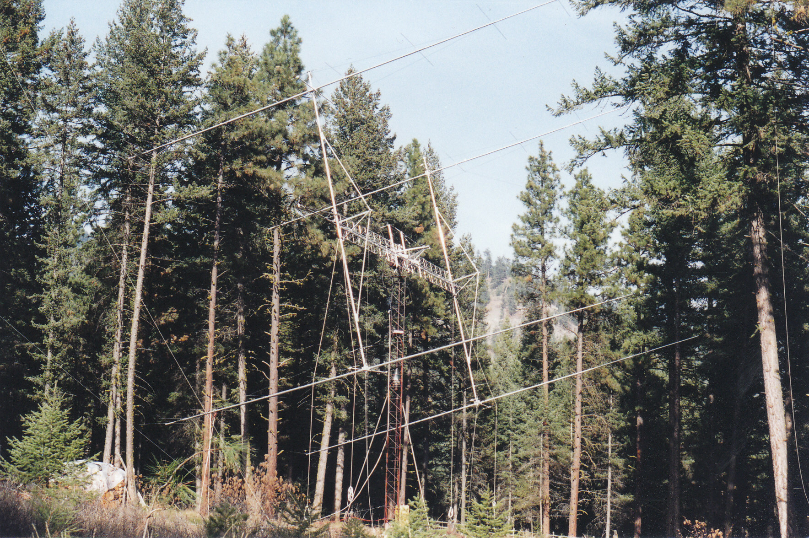
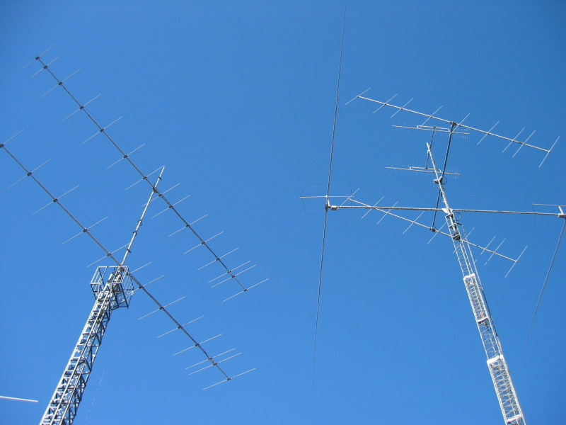
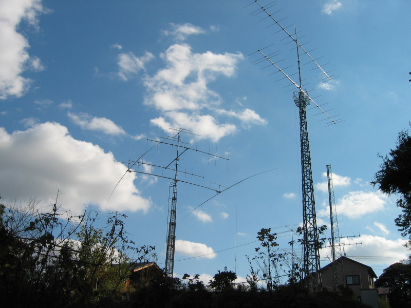
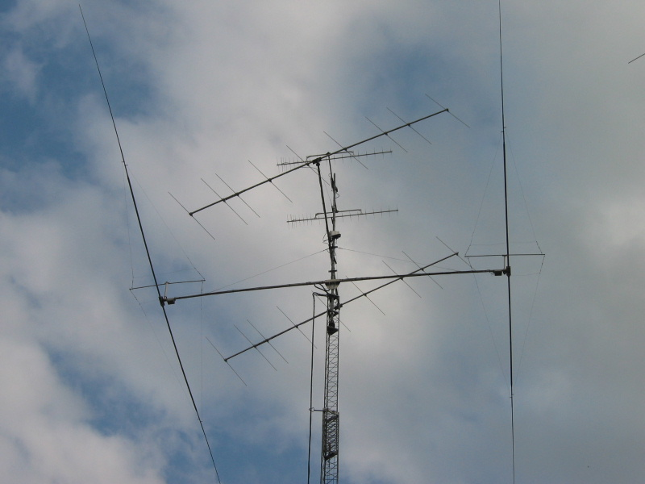
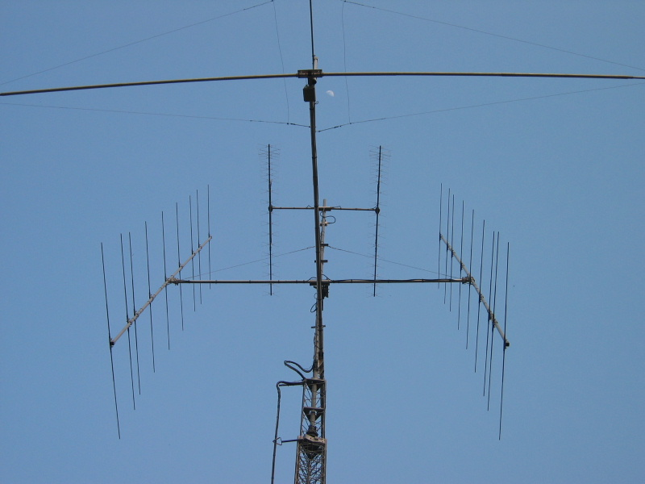
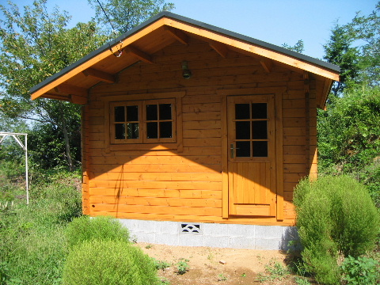
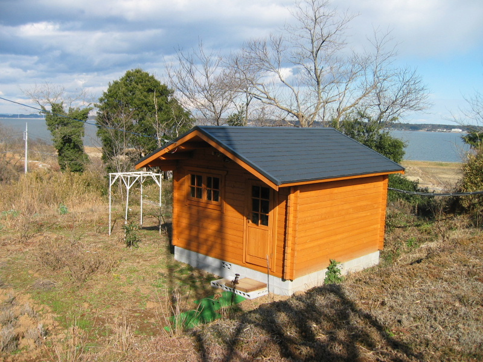
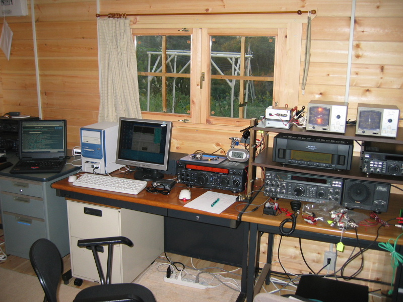
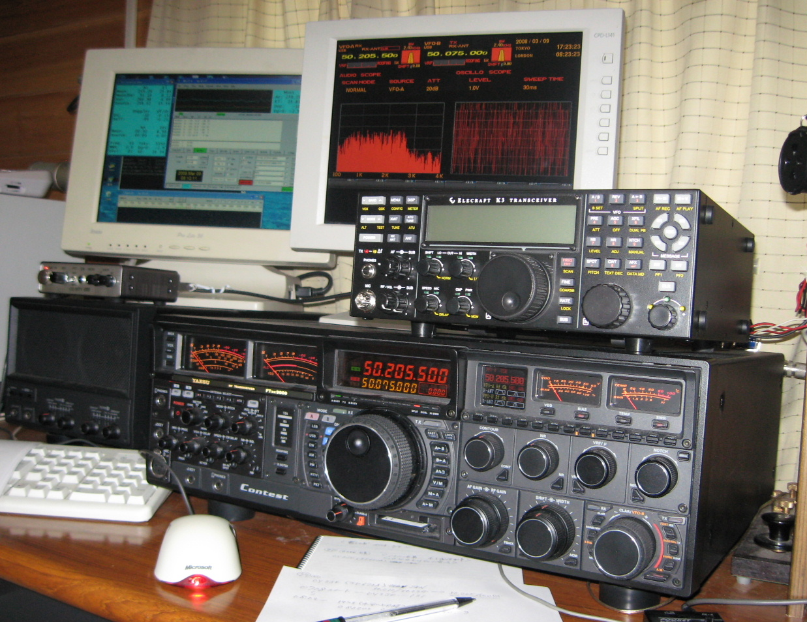

|
*** JA1RJU 50MHz EME SITE *** |
◎ JA1RJU 50MHz のEME SITE Kasumigaura Ibaraki (QM06cb)
|
◎ 50MHzのEMEの再開に加え、海外局との交信に限り50MHzバンドでも1KWの電力での運用が可能となったのを機会に、
新たに固定局を設置することを計画しました。 同一の総合通信局管轄内の免許申請は、同じ識別信号(コールサイン)となるため、 関東地区の茨城県内に2局目のJA1RJUの固定局が開局することになりました。 個人局として国内に開局しているコールサインとしては、開局当時からのJA7JU(青森県・弘前市=固定局)、鹿児島県・与論島のJA6FRIに続く、 4局目の固定局になりました。 50MHzで1KW局を開設するには少なからず、免許の申請に際し、特別に許可条件が加えられています。 特に人口密集地の関東地区内では、他の総合通信局管轄内よりも予想以上の厳しいものとなっています。 曰く、「近隣に医療施設(大病院等)が無い事」、「近隣にNTT等の無線中継局が無い事」、「周囲2Km以内に小学校が無い事」など、 これを満たす場所など関東エリアの都市部周辺、特に大都市周辺では不可能に近い条件です。 ホームQTHの三鷹市は、南隣が小学校、西側に中学校、北側には病院の建物が立ち並ぶ状態で、許可条件を満たす事は困難です。 大都市周辺で2Km以内に「小学校の無い場所」などが存在するのか疑問です。 茨城県在住の知人の所有する霞ヶ浦湖畔の土地に設置されていた無線局が、幸いこの規制には該当しない場所であることで、 オーナーのご好意で"共有無線局"として使わせて頂くことに決定し、160m〜6mまでのHF帯を含む1KWの申請を行う事になりました。 この場所は、霞ヶ浦の中心部に突き出た半島の小高い丘陵という、無線を楽しむには絶好の場所でした。 "問題"の最寄の小学校は、2.2Kmほど離れていて辛うじて条件はクリアーしています。 ただし、最寄の「コンビニ」まで、車で5Km、スーパーまでは10Kmほど走らなければ買い物も出来ない、 一般生活には不向きな場所なのは、容認しなければなりません。 東京都心部から車で約100Km程離れたこの場所は、東京タワーから発射されるTV電波も弱いため、 ローチャンネルの直接波は、毎年の様に夏場のEsシーズンには中国からのTVの異常伝搬の影響を受け易い場所柄、 近接する都市にNHKのUHFサテライト局が設けられている場所です。開局に際してのTVI対策は、東京方面が丘陵で陰になる数軒に対して、 最寄のUHF局への、VHF→UHFアンテナを取り替える対策で解決出来た。 落成検査の際中、霞ヶ浦の対岸の2Km先にある自衛隊の百里基地から発射されているレーダー信号で、 TVI検査モニターのTVに周期的に縞模様を発生させているのを確認した時には、検査官共々苦笑いだった。
◎念願の50MHz・EME 初QSOはW7GJ ! JA1RJUの霞ヶ浦からの50MHzのEME初QSOは、2004年9月18日の米国・モンタナ州のW7GJ・LANCEとのQSOでした。 このWSJT(JT-65A)によるQSOは、日本時間の朝(2350〜0020z)に、50.137/50.037MHzのスプリットQSOで行われた。 これは、日本ではEMEのQSOが許される周波数が50.000-50.100MHzなのに対して、 北米ではデジタルモードのWSJTはSSB(USB)の周波数帯を使う事になっています。CW専用の50.100MHz以下には出られないため、 JAとのQSOは慣例的にスプリットでのQSOとなっていたのでした。 初QSO時のJA1RJU(QM06cb)のRIGはFT-920にVL-1000(1KW)にFORCE-12の9ELX2段水平スタックでの運用でした。 不思議に？モンタナ州のW7GJ・LanceとのEMEの相性は良く、その後に特注したFORCE-12のMagnum-14ELX2に変更したアンテナでは面白いほど簡単にQSOが出来ました。 ある時など、JA側(こちら)の月の出のスケジュール時に予定時間より数分早めに送信していたところ、 突然「Kazu 富士山頂からでも電波をだしているのか？」とクラスターで聞いてきました。 「お前の場所ではまだ月は見えない筈なのに、もう入感しているよ...」と。 JA-Wの6m・EMEの初QSOでも話題となったW7GJ・Lanceは多くのJAがEMEにQRVするのを待ち望んでいて、 50MHzにEMEが正式に許可されてQRVを始めたほとんどのJA局は、彼がEMEの初QSOの相手となっています。

 50MHzの初QSOだったW7GJ・LancenのQSLとM2の9ELX4アンテナ。 2009年3月30日施行の日本のアマチュアバンドプランの改正(別項参照)で、JA局の50MHzのEME運用周波数は50.000〜50.300MHzに改正されたため、 現在は北米-JAのQSOも同一の周波数で行える様になりました。ただし、JAでは50.100MHz以上にはSSBの国内局がQRVしているため、 QRMなどの無用な混乱を避けて、スケジュールのQSOなどでは、今まで通り50.100MHz以下で送信するスプリットで運用している局も少なくありません。
◎アンテナ群
  50MHz関係のANT群。自立タワー上は14ELX2(FORCE-12 Magnum-1406)
  80mの2ELアンテナの間にセットされた6mのフルエレベーションのEME用アンテナ(EF-906) 2004年に本格的なEME・QSOに備え新設された約8畳のログハウス(写真)がシャックとなっています。 設置されている装置(全て申請済み)は、YAESU製品が主流で、現在はFT DX-9000、FT-1000、FT-920、FT-847、FT-655、Elecraft K3...etc。 これに1KW運用時にはYAESUのリニアーアンプ、VL-1000を使用します。 現在のところ、この霞ヶ浦のシャックでのEME運用は50MHz帯だけで、144/432MHzのハイパワーによるEME運用は予定されていません。
  霞ヶ浦湖畔のシャックは湖を見下ろす高台にある。
  RIGはFTDX 9000がメイン。9000の上は新鋭機・Elecraft K3。  EME DX TOP |